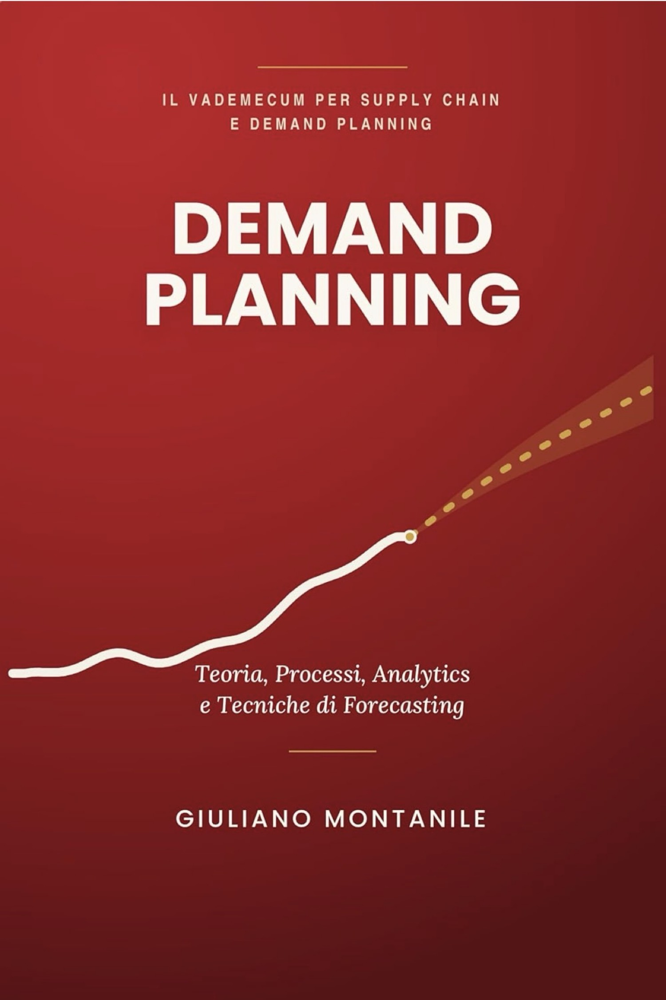

Il vademecum per supply chain e demand planning
Demand Planning
Teoria, Processi, Analytics e Tecniche di Forecasting
di Giuliano Montanile
Un errore di previsione del 10-15% su un prodotto ad alta rotazione può tradursi in stock in eccesso o in uno stockout che brucia mesi di lavoro commerciale. Questo libro è una guida pratica, aggiornata al 2026, per impostare un processo di demand planning solido e proporzionato alla propria azienda.
Non è solo teoria: trovi algoritmi spiegati con esempi, segmentazione ABC/XYZ, KPI di accuratezza, S&OP / IBP e un kit operativo con template pronti all’uso.
Cosa trovi nel libro
- Differenza tra demand planning e semplice forecasting
- Algoritmi: medie mobili, smorzamento esponenziale, Holt-Winters, ARIMA/SARIMA, Croston, regressione
- Come misurare l’accuratezza e il Forecast Value Added
- Nuovi prodotti senza storico
- Processo S&OP e IBP, con casi reali
A chi è rivolto
Demand planner, supply chain manager, commerciali, data scientist, studenti e imprenditori di PMI.
Lo strumento online di Demand Planning Hub ti calcola la previsione. Il libro ti spiega come usarla nel processo aziendale.
La vendita avviene su Amazon, non su questo sito.